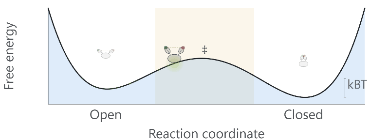
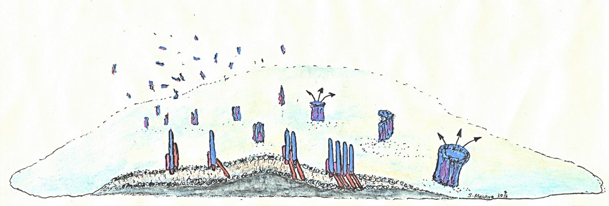

What my laboratory will do
Chemical engineering at the scale of one molecule, in four directions.
- Reaction engineering of a single moleculeTime a protein’s change of shape while it happens, and compare it directly with computer simulations of the same molecule.
- Transport in crowded mediaMeasure how much the crowded inside of a cell slows a protein down, and where the textbook idea of viscosity stops working.
- Devices engineered to be madeTurn the light-concentrating nanostructures from one-off cleanroom pieces into chips that can be copied cheaply.
- Frugal single-molecule scienceA low-cost microscope that follows single molecules, for college teaching laboratories and, with clinical partners, diagnostics.
Recent
- Oct 2026 The Awadh Biodiversity Atlas passes 680 draft species profiles, with look-alike pairs, quizzes and a Hindi interface, a month after going online with 332. About the project.
- 2026 Three manuscripts in preparation: transition paths in waveguides, transport in crowded membranes, and the assembly pathway of Cytolysin A. Working titles.
- 2024 Abstract at the Biophysical Society Annual Meeting on cholesterol derivatives and Cytolysin A. Abstract.
- Jan 2023 Conformational flexibility and the lytic activity of Cytolysin A, in The Journal of Physical Chemistry B. Paper.
Research
What I work on now at the Weizmann Institute, and what I did for my doctorate.

Timing how proteins change shape
How long does an enzyme take to switch between its open and closed shapes? The crossing lasts microseconds. Measuring it directly, rather than inferring it from how often it happens, is the core of my postdoctoral work.
Transition paths →Making single molecules brighter
Holes in an aluminium film narrower than the wavelength of light, and gold nanorods, make a molecule shine many times brighter: enough photons to follow an event that lasts a few microseconds.
Waveguides and nanorods →Reading the data one photon at a time
Each photon arrives with a time and a colour, and nothing else. Statistical methods built for this, such as the H2MM method developed in the Haran lab, recover the protein’s changes of shape straight from the photon stream. In my Ph.D. the same care went into tracking single molecules in microscope movies.
Analysis methods →
How bacterial toxins punch holes in membranes
My Ph.D.: watching single molecules of the toxin Cytolysin A land on a membrane and assemble, piece by piece, into pores, and how cholesterol and crowding on the membrane change that.
Membranes and toxins →Awadh Biodiversity Atlas: community natural history Work in progress
An open-access citizen-science project, still in its early stage, to document the overlooked native flora, insects, birds and wetland life of rural eastern Uttar Pradesh, in the Basti and Ayodhya districts. Draft bilingual profiles for more than 680 species so far, with tools for telling look-alikes apart and learning them; field verification, photographs and dated sightings from the region are the next stage. Working toward bilingual field guides and rural school science programmes.